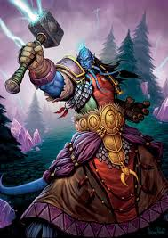

<table border="">
	<tbody>
		<tr>
			<td rowspan="6" style="color: forestgreen;" >CLASES CON ATAQUE A DISTANCIA
</td>
			<td style="color: gray;" >RAZAS</td>
			<td style="color: forestgreen;" >CLASES</td>
			<td style="color: gray;" >OBJETOS</td>
			<td rowspan="6">Personajes con ataques cuerpo a cuerpo
                <ul>
                    <li>6. Monje</li>
                    <li>7. Picaro</li>
                    <li>8. Caballero de La Muerte</li>
                    <li>9. Gerrero</li>
                    <li>10. Paladin</li>
                </ul>

</td>
		</tr>
		<tr>
			<td></td>
			<td colspan="2">1.-Brujo: personaje con ataques a distancia</td>
		</tr>
		<tr>
			<td colspan="2">2.-Mago: personaje con ataques a distancia</td>
			<td></td>
		</tr>
		<tr>
			<td></td>
			<td colspan="2">3.- Sacerdote: personaje con ataques a distancia</td>
		</tr>
		<tr>
			<td colspan="2">4.-Cazador: personaje con ataque a distancia</td>
			<td></td>
		</tr>
		<tr>
			<td></td>
			<td colspan="2">5.-Chaman: personaje con ataque a distancia</td>
		</tr>
	</tbody>
</table>